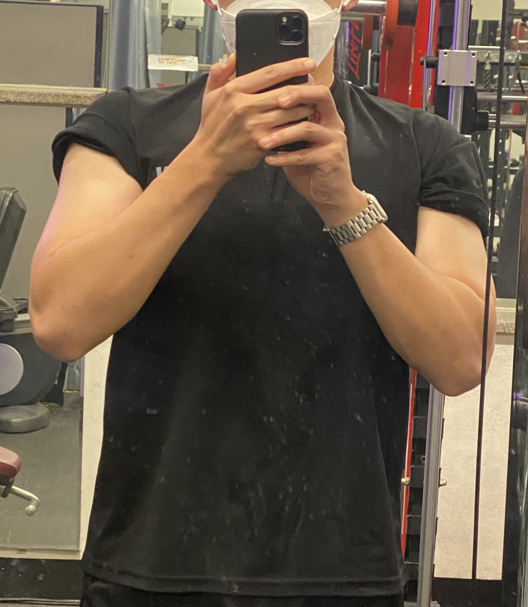
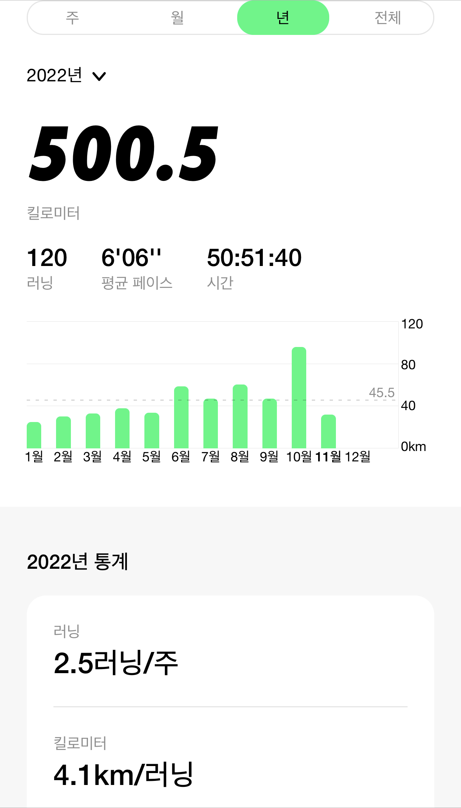

About
What about me?
🏫
🌍
💛
💚
I'm in KonKuk University.
I am the 18th class of the School of Electrical and Electronic Engineering.
I'm live in GwangJin, Seoul. I've lived here for almost two years. I live alone in a studio of just over 20 square meters.

My favorite hobby is fitness. I've been doing fitness for a little over two years, and the three major workouts are bench press 105kg, deadlift 155kg and squat 140kg. I do fitness 5~6 times a week, which is my favorite hobby.
My favorite hobby is fitness. I've been doing fitness for a little over two years, and the three major workouts are bench press 105kg, deadlift 155kg and squat 140kg. I do fitness 5~6 times a week, which is my favorite hobby.

My second hobby is running. Running was my first in the army. In 2021, I ran 400 km in one year, and this year I am currently running 518 km. The reason why I like running is I can run without thinking while running.
My second hobby is running. Running was my first in the army. In 2021, I ran 400 km in one year, and this year I am currently running 518 km. The reason why I like running is I can run without thinking while running.